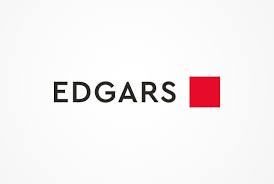

EDGARS
Edgars is a Johannesburg-based chain of stores, nearly all in Southern Africa, variously described as a specialty department store or simply as stores selling clothing, shoes, homeware & beauty products. The chain has just over 200 stores as of July 2020, with multiple stores in South Africa, Namibia, Zambia and Botswana as well as in the capital cities of eSwatini (Swaziland), Lesotho, and Ghana. It was founded in Johannesburg, South Africa in 1929. It is owned by Edcon, which is looking for a buyer due to economic difficulties stemming from the COVID-19 pandemic. Edgars Stores Limited is a separate company operating the businesses in Zimbabwe: Edgars and Jet department stores, as well as Edgars Financial Services and Carousel, its Bulawayo-based manufacturing arm.